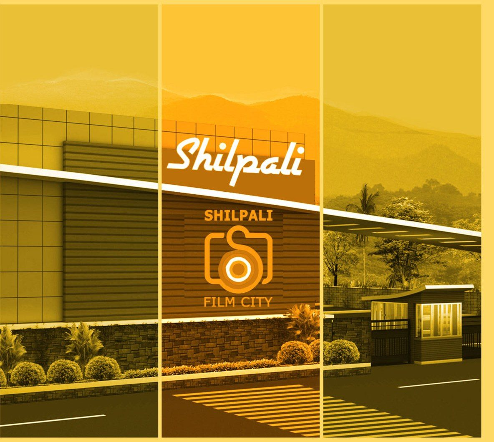
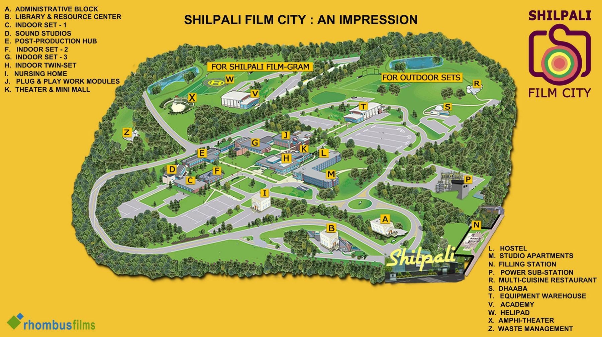
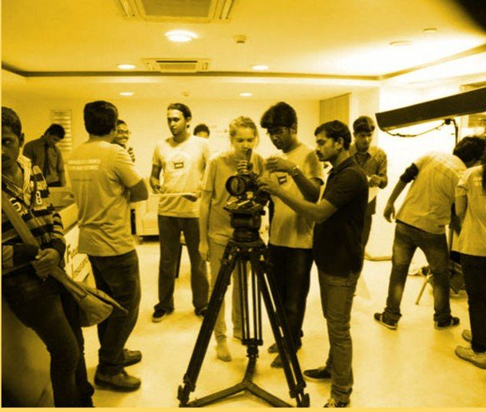
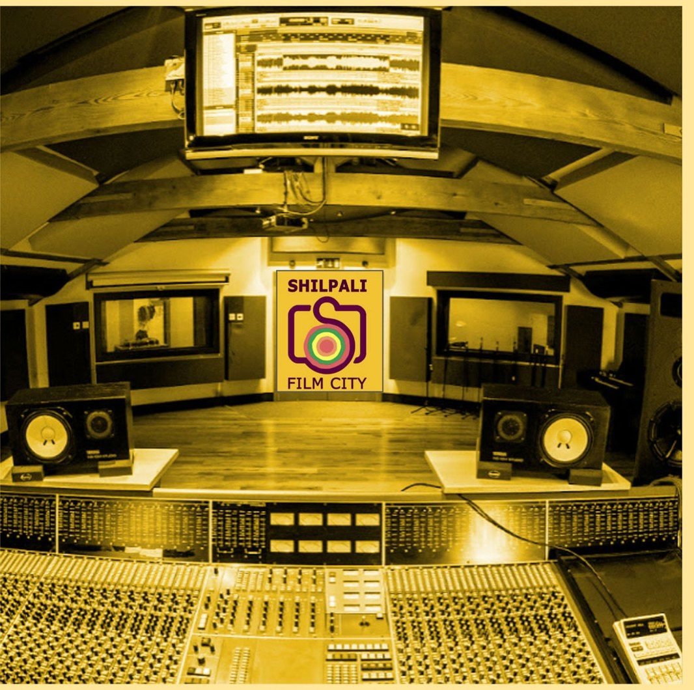

Rajasthan's first and only film city — a purpose-built home for cinema, craft and culture near Jawai Bandh in Sumerpur Tehsil.
Promoted by Rhombus Films and Shilpali Film City Private Limited, Shilpali Film City is a development project designed to give Rajasthan the state-of-the-art production infrastructure its landscapes and stories have long deserved.
The promoters are developing the land in phases — earmarking distinct zones for production, post-production, training, hospitality and culture — while also inviting credible partners to build out facilities within the master plan. The full project is targeted for completion within five years of final approvals.
See what's planned
An early impression of the layout, lettered by zone — illustrative until the final, surveyed site plan is ready.

Outdoor sets and the Shilpali Film-Gram eco-village occupy dedicated areas outside the core production campus.
Ten broad zones make up the master plan — from raw production infrastructure to the schools and amenities that keep a film city running.
Purpose-built sound stages and expansive backlots for every genre of production.
A 20-acre eco-village preserving Rajasthan's traditional arts, crafts and artisans.
Outdoor and indoor filming equipment available for hire on-site.
Visual processing units and a dedicated audio recording centre.
Film School, Dance/Music Academy, Animation School and School of Journalism.
A multi-screen cinema hall alongside a private preview theatre.
Film archive, art gallery, museum and library on campus.
Hostel, hotel, resort, residential hub, restaurants and bar.
Swimming pools, gymnasium, and an amphitheatre with a rainwater-harvesting reservoir beneath the stage.
On-site hospital, filling station and helipad.
Rajasthan's music, art and culture continue to thrive and charm audiences worldwide — yet its own cinema has all but gone quiet. Shilpali Film City is committed to reviving it through technical assistance, special packages and incentives, and access to a larger, more skilled talent pool.
India still lags behind international standards of formal training in film technology and craft — most of the industry is self-taught. Shilpali is committed to imparting structured skill-training across filmmaking disciplines and building a creative pool of professional filmmakers, aligned with the Skill India mission.
Principally a development project, Shilpali Film City aims to draw film and TV producers from around the world to make in Rajasthan — lending its weight, in turn, to Make in India.


A growing panel of industry advisors supporting the project's production, technical and cultural vision.
VFX supervisor and digital compositor with international production credits across India, Thailand and Germany (Studio Babelsberg), including Rang De Basanti (2006) and The Rising: Ballad of Mangal Pandey (2005).
View IMDb profile →Reserved for an additional international advisory appointment.
Credited for visual effects and producing work within the Indian film industry. See her IMDb profile for a full list of production credits.
View IMDb profile →Reserved for an additional India-based advisory appointment.
Promoter & Managing Director